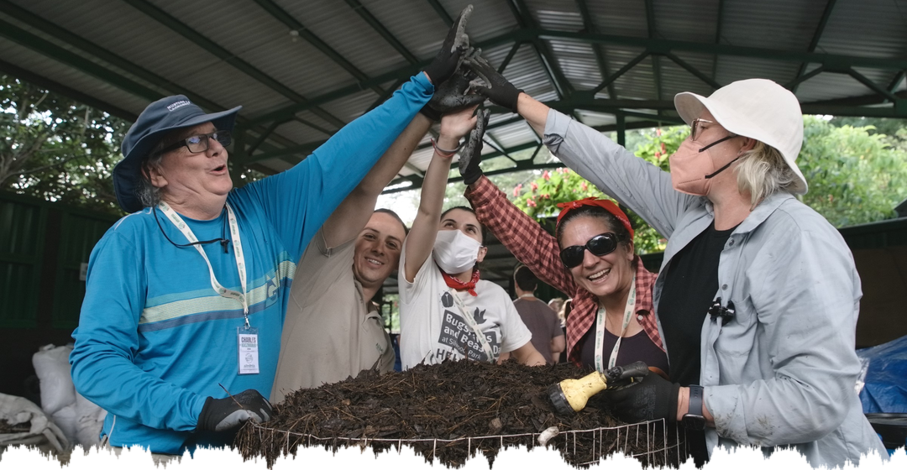

What does Regenerative actually mean?
And who gets to decide?
A destination or a direction?
A certified status or a way of thinking?
A premium product, or a standard everyone who works the land can reach?
What does regenerative mean to you? Tell us in the comments.